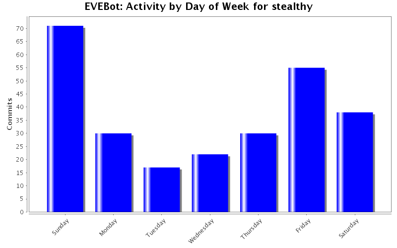
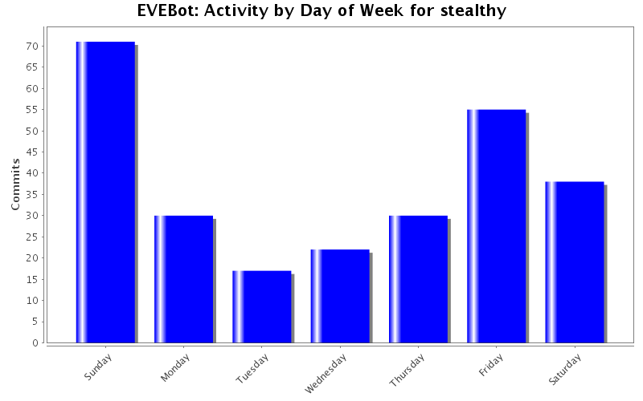
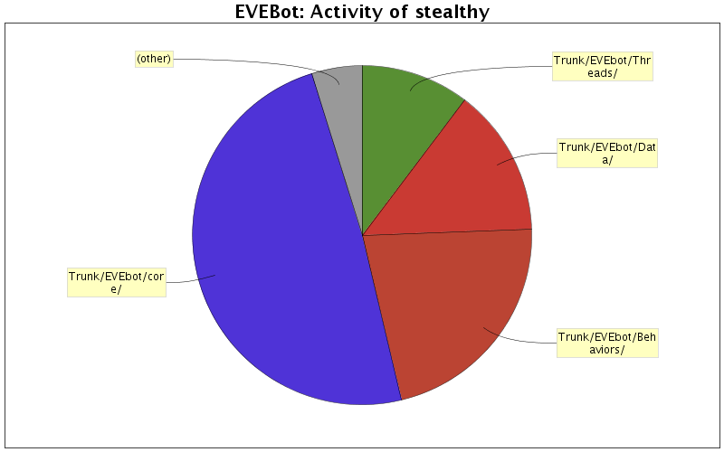

Activity by Clock Time



| Directory | Changes | Lines of Code | Lines per Change |
|---|---|---|---|
| Totals | 263 (100.0%) | 9109 (100.0%) | 34.6 |
| Trunk/EVEbot/core/ | 129 (49.0%) | 4464 (49.0%) | 34.6 |
| Trunk/EVEbot/Behaviors/ | 34 (12.9%) | 1987 (21.8%) | 58.4 |
| Trunk/EVEbot/Data/ | 22 (8.4%) | 1284 (14.1%) | 58.3 |
| Trunk/EVEbot/Threads/ | 60 (22.8%) | 940 (10.3%) | 15.6 |
| Trunk/EVEbot/ | 8 (3.0%) | 346 (3.8%) | 43.2 |
| Trunk/EVEbot/Testcases/ | 4 (1.5%) | 39 (0.4%) | 9.7 |
| Trunk/EVEbot/interface/ | 1 (0.4%) | 36 (0.4%) | 36.0 |
| Trunk/EVEbot/core/Lib/ | 3 (1.1%) | 10 (0.1%) | 3.3 |
| Trunk/EVEbot/config/ | 1 (0.4%) | 2 (0.0%) | 2.0 |
| branches/stable/core/ | 1 (0.4%) | 1 (0.0%) | 1.0 |

obj_Drones: Do some validation on QuickReturnAllToOrbit to avoid EVE:Execute spam
obj_Configuration: Add MaxDroneRange config item to Combat.
Mission Database: Added some missions.
Offense: Make use of Config.Combat.MaxDroneRange to limit the range at which you'll send drones.
33 lines of code changed in 4 files:
defines: Remove extra warpgate define
obj_Agents: Add a semi-random wait on mission turnin.
obj_Drones: Fix drone recall. No more crashes! Also, it scoops if the drones are close enough.
obj_Ship: Add some debug spew for BuildLookupTables when debug is enabled.
Offense: Remove extra call to Drones:CheckDroneHP
EVEBot.iss: Remove the instance of obj_Skills. Also helps with crashes.
Mission Database: As usual, added missions.
110 lines of code changed in 7 files:
Mission Database: Added more missions, as usual.
37 lines of code changed in 1 file:
obj_Ship: comment the echo spam
3 lines of code changed in 1 file:
obj_Drones: only attempt to recall one drone per pulse
obj_Ship: Fix OptimalWeaponRange, make all the Optimal*Ranges return float instead of int.
26 lines of code changed in 2 files:
Mission Database.xml: added missions
163 lines of code changed in 1 file:
obj_Ship: comment some echos, various ammo fixes/tweaks
7 lines of code changed in 1 file:
obj_MissionCommands: Few assorted fixes
9 lines of code changed in 1 file:
obj_Agents: Added a few things here and there. Don't quit missions.
3 lines of code changed in 1 file:
MissionCombat: Attempt to slow down mission combat
MissionCommands: Fixed the range issues (drones/missiles/guns, it's all good), approaching works right.
Missions: Remove a lot of spam.
235 lines of code changed in 4 files:
Targeting: Finally removed the source of the annoying "Target.Value.EntityID" error spam, fixed UnlockRandomTarget to not try to use .EntityID on an index:entity.
2 lines of code changed in 1 file:
Mission Database: Added more missions.
Offense: Attempted fix for a very rare drone issue.
Defense: Fix entitycache throttling.
Social: Fix a LOT of the checks.
obj_Ship: Few ammo-code fixes.
obj_MissionCommands: Lots of fixes for everyone, works right with guns, approaches much better, much mor viable for drone users.
obj_Drones: Dirty hack for the ShouldLaunchDrones check for missions. Yes, you WILL have damaged drones.
obj_Cargo: Attempted conversion to EVE:MoveItemsTo
obj_Asteroids: Fix typo for belt bookmarks.
obj_Agents: Pick an agent on startup to help avoid the retarded convoing of the wrong agent.
obj_Ratter: Fix throttling of entitycache.
416 lines of code changed in 12 files:
obj_Agents: Fix mission blacklisting. EVEBot will now go to a different agent instead of just spazzing out on the current agent on a blacklisted mission.
obj_MissionCommands: Fix targeting range with guns/drones. Srsly, wtf cpp.
Mission Database: Added or fixed a shitload of level 1 missions.
355 lines of code changed in 3 files:
obj_Drones: Fix a typo in the quick return to orbit code
1 lines of code changed in 1 file:
obj_Rattle: Throttle back EntityCache updates when we're not the active mode.
obj_Drones: Add a method for returning drones to orbit.
obj_Ship: Add a quick and probably dirty fix for OptimalWeaponRange for ships with both turrets and launchers, i.e. tristan
Defense: Queue up any warpscrambling rats, untested
Offense: Recall drones to orbit if our active target is out of drone reach
72 lines of code changed in 5 files:
obj_Ship: Clean up the ammo code. Remove a ton of hungarian notation (I probably missed some of it) and all of my old and now useless code. Condense a Get/TurretMinimumRange and Get/TurretMaximumRange since there was no point at all in keeping them separate, while it was causing more work.
Offense: Make use of the GetTurretMinimumRange and GetTurretMaximumRange members. Somewhere between the last couple revisions and now I added a break in the deactivation of out-of-range Launchers.
119 lines of code changed in 2 files:
Offense: Fixed the ammo result caching. It was broken because of use of itrWeapon after the for loop conversion. Also fixed the typo in the target painter module list. I also made every iterator much more local and single use, and removed itrWeapon.
26 lines of code changed in 1 file:
Offense: I hate race conditions with a passion I cannot put into words. EVEBot dev emorage count: 2.
15 lines of code changed in 1 file:
obj_Ship: Factor in Tracking Enhancers in optimal range calcs.
defines: Add a define for tracking enhancers.
Defense: Resuming when fleeing to station for "low cap" should work, if it doesn't let me know.
Offense: Activate target painters at 2 * their optimal range since they have such a massive friggin' falloff.
60 lines of code changed in 4 files:
obj_Ship: Few fixes and improvements for ammo/gun detection in the ammo code
28 lines of code changed in 1 file:
(103 more)